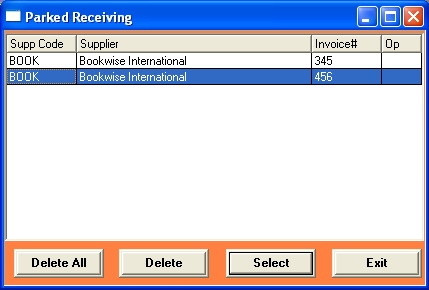

Parking is done automatically when you start receiving and deleted when you save your session to List.
Pressing the Recall Parked button will bring up the following dialog.

This dialog will list the available invoices for each supplier that have been parked. Highlight the invoice you want to recall and press
the Select button to load the parked receiving session back into the receiving window. Now you can continue were you left off from.
If you want to start again you can delete a parked session using the Delete button.
If there are a built up amount of parked sessions that are all, you can click on the 'Delete All' button, which will clear all lines.
When you start receiving if you enter a supplier and invoice number that have been parked then this session will
automatically load into the receiving window, without having to press thee Recall Parked button (From the main receiving window)